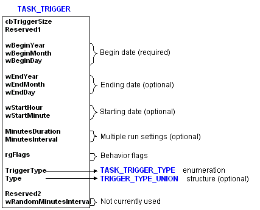
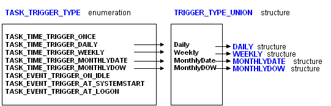

Task Scheduler 1.0 uses several structures to define the criteria of a trigger.
[!Note]
For more information about Task Scheduler 2.0 triggers, see Trigger Interfaces.
Â
The following illustration shows the TASK_TRIGGER structure. It has three required members (wBeginYear, wBeginMonth, and wBeginDay) that must be set when creating a new trigger. (To jump to the reference page for this structure, click the structure name in the illustration.)

Be aware that the TriggerType member uses the TASK_TRIGGER_TYPE enumeration and the Type member uses a TASK_TRIGGER_UNION structure. The TASK_TRIGGER_TYPE enumeration is used to specify the type of trigger (event and time-based trigger types). The TRIGGER_TYPE_UNION structure is used to combine the DAILY, WEEKLY, MONTHLYDATE (day of month), and MONTHLYDOW (day of week) structures that are used to specify when a time-based trigger will fire.
If TriggerType specifies a one-time time-based trigger or an event-based trigger, the Type member is ignored. The TRIGGER_TYPE_UNION structure is used only if the TriggerType member specifies a daily, weekly, day-of-month, or monthly day-of-week time-based trigger.
In addition, the setting of the Type member indicates which member of the TRIGGER_TYPE_UNION structure is used. The following illustration shows the relationship between the values of the TASK_TRIGGER_TYPE enumeration and the members of the TRIGGER_TYPE_STRUCTURE structure. (To jump to the reference pages for these structures click the structure name in the illustration.)

Â
Â